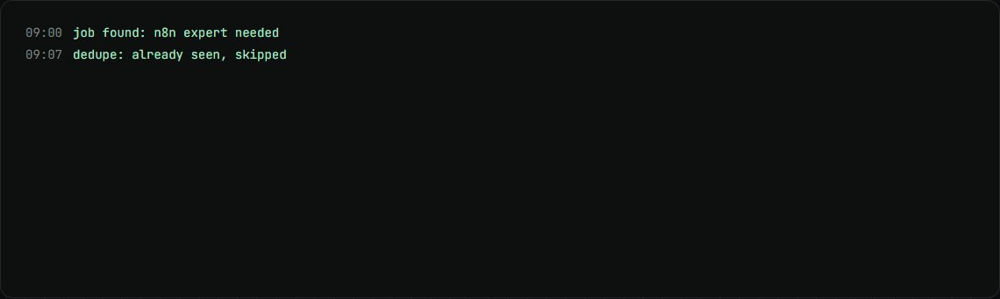
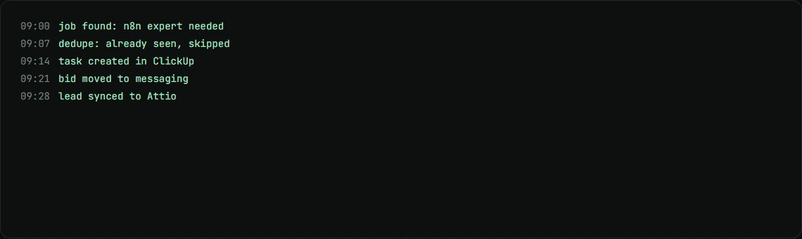

Upwork lead pipeline
Finds fitting Upwork jobs for each consultant and moves live conversations into the leads pipeline.
my role Fixed the job extractor and built the Upwork to Leads flow.
The problem
Consultants searched Upwork by hand, and promising conversations got lost between Upwork, ClickUp and the CRM.
How it works
- A ClickUp button runs Apify searches for each consultant.
- Results are cleaned, deduplicated and filtered, and each new job becomes a ClickUp task.
- When a bid reaches active messaging, a second workflow copies it into the leads pipeline.
- The leads pipeline syncs to Attio.
What changed
- 5consultant search profiles
- 4xduplicate Apify calls removed
- 204postings found by the free scan
What I built
- Removed duplicate Apify calls: it was making four times as many as needed.
- Built the Upwork to Leads workflow.
- A free scan script for when Upwork blocks scrapers.
Stack
- n8n
- Apify
- ClickUp
- Attio
- Playwright
Stills

